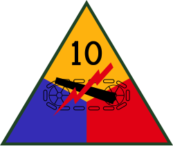
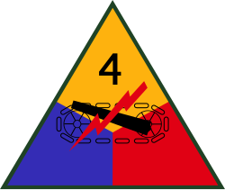

54th Infantry Regiment
Not yet constituted / organized
This timeline begins in 1916. The cited organization had not yet been constituted or organized during this interval; its formation follows.
Infantry timelines · Infantry numbers 1–200
A century of division assignments
1916–2026 · Regimental service, battle groups, battalions and deployments.

The common row follows the regiment. After its reorganization, battle groups and battalions could hold different assignments at the same time. A deployment or temporary attachment does not by itself change the assigned division. The common row closes on 20 Sep 1943; later service belongs to the separate element rows. Battalion rows follow headquarters lineages, often descended from lettered companies, rather than assuming that the old regimental battalions continued unchanged.
The 2d Battalion row traces Company B through the 61st and 561st Armored Infantry Battalions before its 1957 redesignation. Inactive paper assignments to the 71st Infantry and 10th Armored Divisions are explicitly labeled inactive.

10th Armored Division71st Infantry Division
4th Armored DivisionRepresentative division patches. Patterns could change over time; an image does not imply that the exact version was worn throughout every period. Divisions without a verified asset remain identified by name.
At a glance
Bar widths follow elapsed time.
Scroll horizontally on a small screen. Select a segment to open its dated entry. Diamond markers open deployments; their positions indicate the labeled year, not an exact start date or duration. Short assignments are easier to inspect in the list below.
Explore a date
Look up the dated rows below. Service notes with incomplete dates are excluded; last-documented results do not certify a current assignment.
The dated record
Deployments, operations and credited campaign service appear inside assignment cards. Award years establish credited service, not exact tour dates. Some service notes identify only company-sized elements. This is a sourced selection, not a complete movement log.
Assignment ends are exclusive: the next period starts on that date. *Striped final bars mean last documented, with later status unverified through the page cutoff. Unknown intervals are not treated as inactive.
54th Infantry Regiment
This timeline begins in 1916. The cited organization had not yet been constituted or organized during this interval; its formation follows.
54th Infantry Regiment
The available record does not establish a precise assignment throughout this interval. No division is inferred.
54th Infantry Regiment
Division names are normalized across historical redesignations. This entry follows the cited unit lineage.
1918
54th Infantry Regiment · Campaign service
Campaign participation is recorded in the cited history. The year label summarizes campaign service, not an exact overseas tour.
Source54th Infantry Regiment
The unit was inactive but retained the division assignment shown. Paper assignments and Reserve-officer training are not active combat service.
54th Infantry Regiment
The unit was inactive but retained the division assignment shown. Paper assignments and Reserve-officer training are not active combat service.
54th Infantry Regiment
The unit or its headquarters lineage was inactive. This status does not imply that every inherited honor or divisional affiliation was erased.
54th Infantry Regiment
Division names are normalized across historical redesignations. This entry follows the cited unit lineage.
2d Battle Group / Battalion lineage
Division names are normalized across historical redesignations. This entry follows the cited unit lineage.
1944-1945
2d Battle Group / Battalion lineage · Deployment / campaign service
Company B of the 61st Armored Infantry Battalion earned Rhineland, Ardennes-Alsace and Central Europe campaign credit. The labeled service overlaps an assignment change and is listed only once; consult the following assignment cards as well.
Source2d Battle Group / Battalion lineage
The unit was inactive but retained the division assignment shown. Paper assignments and Reserve-officer training are not active combat service.
2d Battle Group / Battalion lineage
The unit was inactive but retained the division assignment shown. Paper assignments and Reserve-officer training are not active combat service.
2d Battle Group / Battalion lineage
The unit was inactive but retained the division assignment shown. Paper assignments and Reserve-officer training are not active combat service.
2d Battle Group / Battalion lineage
The unit or its headquarters lineage was inactive. This status does not imply that every inherited honor or divisional affiliation was erased.
2d Battle Group / Battalion lineage
The cited record establishes service outside an assigned division. Higher headquarters and temporary operational attachments could still direct the unit.
2d Battle Group / Battalion lineage
Division names are normalized across historical redesignations. This entry follows the cited unit lineage.
2d Battle Group / Battalion lineage
The unit or its headquarters lineage was inactive. This status does not imply that every inherited honor or divisional affiliation was erased.
2d Battle Group / Battalion lineage
Institutional or training service. This is a command relationship, not a maneuver-division assignment. The source establishes this last recorded status, not uninterrupted service through 2026. The striped bar extends to the page cutoff to keep the later research gap visible.
3d Battle Group / Battalion lineage
Institutional or training service. This is a command relationship, not a maneuver-division assignment. The source establishes this last recorded status, not uninterrupted service through 2026. The striped bar extends to the page cutoff to keep the later research gap visible.
Service note · dates incomplete
The original 1st Battalion became the 61st Armored Infantry Battalion in 1943, later the 561st. This is separate from the later Company B lineage used by the modern 2d Battalion.
Service note · dates incomplete
The headquarters lineage served in World War II and, after a 1966 activation, in Vietnam before inactivation in 1972. The later Army article dates its 2019 training activation to 31 July, rather than the August date in secondary accounts.
Service note · dates incomplete
The former 2d Battalion became the 20th Armored Infantry Battalion in September 1943, later the 520th. It belonged to the 10th Armored Division.
Service note · dates incomplete
The 54th Armored Infantry Battalion was another successor of the 1943 breakup. Postwar redesignations and inactive assignments are recorded in the parent certificate.
Army Center of Military History lineage certificates provide the dated backbone. Regimental associations and secondary histories supplement individual operations and battalions. Where the evidence stops, the page says so. A page cutoff is not a claim that every unit directory was current on that date.
Earlier battalions are covered by common regimental service; separately dated lineages and substantiated later battalions receive their own rows or notes. A unit graphic alone is not evidence of a battalion assignment. Reserve, training and inactive organizations are distinguished from active combat units.
Unmodified artwork from Wikimedia Commons; individual file pages identify the artist and license. Insignia represent the divisions, not regimental affiliation badges.
{kind=link}
{kind=link}
{kind=link}
{kind=link}
{kind=link}